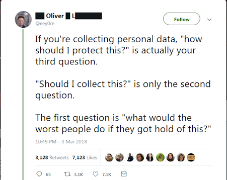
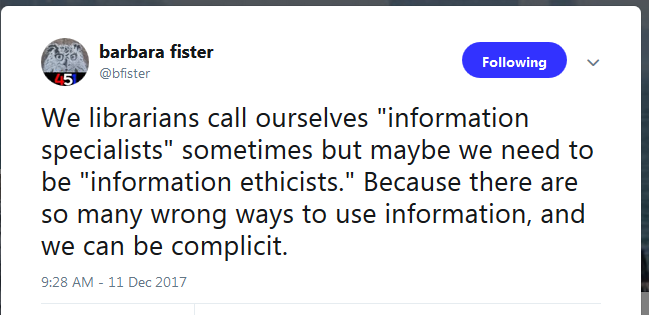
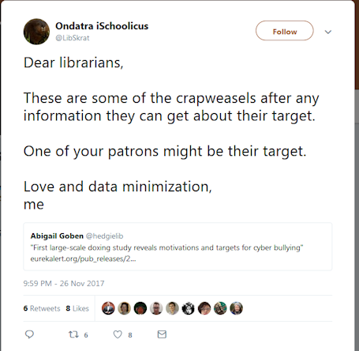
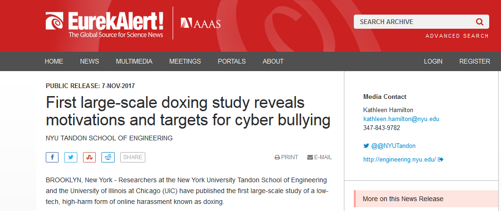
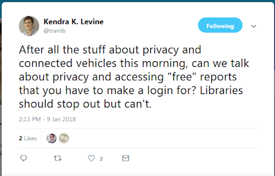
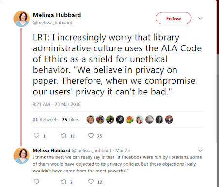
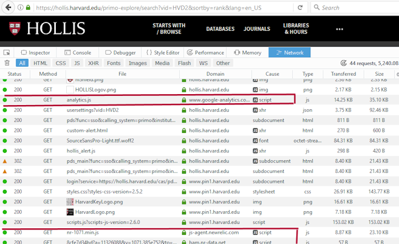

Patron Privacy
In the Era of Electronic Discovery and Delivery
Bobbi Fox
ABCD-Library/Social Justice Discussion Group
26 March, 2018
Even Before We Knew about Cambridge Analytica...
Security people were concerned about privacy
Source: https://twitter.com/eey0re/status/970144255745212416?s=17 Screen shot taken on 23 March 2018
Even Before We Knew about Cambridge Analytica...
Many Librarians were also concerned about patron privacy
Source: https://twitter.com/i/web/status/940226832280023041 Screen shot taken on 23 March 2018
Even Before We Knew about Cambridge Analytica...
Source: https://twitter.com/i/web/status/934980079892992001 Screen shot taken on 23 March 2018
https://twitter.com/i/web/status/934980079892992001 Screen shot taken on 23 March 2018
Source: https://www.eurekalert.org/pub_releases/2017-11/ntso-wtd102617.php. Screen shot taken on 23 March 2018
Even Before We Knew about Cambridge Analytica...
Source: https://twitter.com/i/web/status/950807710345375744 Screen shot taken on 23 March 2018
A Librarian muses over Cambridge Analytica...
Source: https://twitter.com/melissa_hubbard/status/977218846099681281 Screen shot taken on 26 March 2018
Source: twitter.com/melissa_hubbard/status/977219799901237249 Screen shot taken on 26 March 2018
Live demo?
Just in case

Some reading...
- Data Analytics and Patron Privacy in Libraries: A Balancing Act, a presentation by Becky Yoose at Code4Lib (note: you must enable ajaxapis.google.com to see this)
- Library Freedom Project
- Practical Privacy for Librarians a presentation by Jessamyn West
- Metadata – have we got the ethics right?
- Privacy, Security, and Your "Data Shadow" a blog post by Jacquelin Wernimont